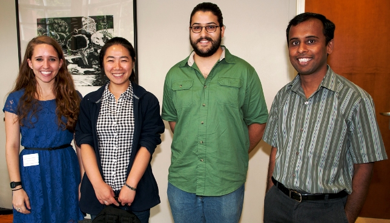
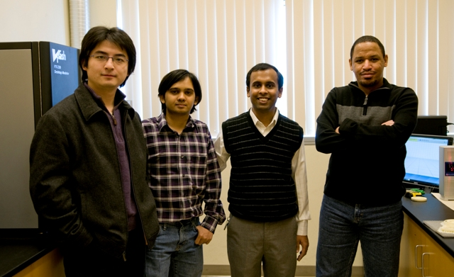

Welcome
The Sustainable Product Lifecycle Design Lab is commited to investigating methods and tools for sustainable design, sustainable product Lifecycle design, tolerancing and metrology.
Current Lab Group
Current lab members at the Summer REU Poster Symposium, from left: Jessica Spoll (Summer REU student), Yang Hu (Ph.D. student), Amaninder Gill (MS student) and Dr. Gaurav Ameta. Missing from the picture are Arvind Raman Shankar (MS student) and Martin Baker (graduated May 2013).
Previous Lab Group
Lab members in 2010 from left: He Huang, Raghunathan Srinivasan, Dr. Gaurav Ameta and Mohammed Anazi.
News
- Yang Hu defended her MS Thesis and presented a poster
and a paper at ASME IDETC Conference.
- Jessica Spoll presented her Summer REU Poster.
- Yang Hu and Arvind Raman Shankar presented their posters at the Wiley Research Exposition, WSU.
- Yang Hu received the CIE Poster Award, ASME IDETC Conference, Chicago, IL - Aug 2012.